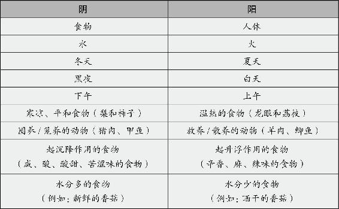
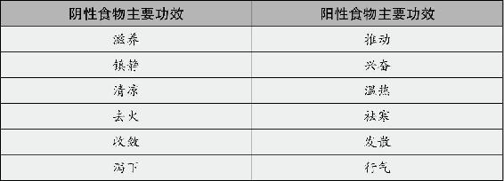
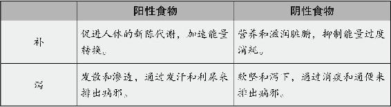

一直以来，传统的养生观念都强调“早吃饱，午吃好，晚吃少”，为什么呢？
因为，食物属阴，需要阳气来消化才能转换为能量。
白天属阳，人体与自然界相感应，人体的阳气也是在白天比较旺盛。尤其是早上到中午这段时间，是一天中人体阳气最足的时候，这时候吃什么都好消化。
夜晚属阴，晚上是人体阴气旺阳气弱的时候，此时，吃下去的东西不容易被消化，那自然就变成废物在体内堆积起来。
阳气足的人，比如小孩，或是身体强壮喜欢运动的人，吃肥甘厚味是可以的。你看武松打虎前，一口气将5斤熟牛肉吞入肚子，都因他身体阳气旺，足以克化得动这“劳什子”，而一般人要这么吃，非出大事不可。
怎样知道自己阳气足不足呢？你看三个方面就可以了。
一、你的年龄
随着年龄的增长，你身体的阳气会逐渐减少。
二、你的运动量
平时很少运动的你，阳气一定不足。
三、是否怕冷
你越是怕冷，身体的阳气越不足。
想一想，为什么我们伤风感冒以后嘴里没有味，一点都不想沾油腻的东西？这就是身体的本能反应，它在警告我们。外面的风寒阴邪已经进门来了，就不能再吃阴性重的食物了，这样就能避免阴邪里外夹攻。
另外，冬天的天时属阴，人体的阳气都藏在体内，相对较盛，这时候，可以多吃一些营养丰富的阴性东西来平衡。夏天的天时属阳，人体的阳气都浮在身体表面，体内阴气盛，此时就最好吃得清淡一点。
还有，白天属阳，夜晚属阴，所以人一般要在白天吃饭，夜里睡觉。而现在很多人睡前都吃东西，美其名曰夜宵。对此，我外婆有个形象的说法，叫“压床脚”。就是说这时候吃下去的东西不但不能给人增加营养，反而还会给床增加负担。为什么佛门弟子讲究“过午不食”，想来是很有道理的。
总之，阳气就是身体的本钱。你能吃什么，吃多少，都要看看自己这个钱包鼓不鼓再说。不顾自己的本钱多少盲目地吃，是很多人得慢性病的根源。
在食物与食物之间，也分阴阳。有一些食物，具有比较明显的扶助人体阳气的作用，我们就把它们统称为阳性食物（当然，这种阳性是建立在食物阴性基础上的偏阳性），而除此之外的其他食物，则把它们叫作阴性食物。
怎么区别阴性食物和阳性食物呢？阴性食物是给人体补“水”和补充营养的，使能量往人体的下部走。阳性食物是促进我们身体新陈代谢的，使能量往人体的上部走。
举例来说，使人发胖的食物是阴性的，使人“长气力”的食物是阳性的；能使人情绪平静的食物是阴性的，能使人精神振奋的食物是阳性的；降火的食物是阴性的，祛寒的食物是阳性的。
以下是一个简单的关于食物及其他常见事物的阴阳特性分类表。

从中医食疗的角度讲，阴性食物、阳性食物对人体的作用如下表。

从“补”和“泻”这个角度来分，阴性食物和阳性食物的作用也不同。

关于阴阳食物“补”的作用的不同，我举个例子：
如果一个人血虚，需要补血，吃什么效果最好？我问过的女性朋友中，十个有九个都会想到阿胶和当归。大家认为这两样东西都是补血上品，所以好多女性挺喜欢吃。
其实，阿胶和当归的作用，区别太大了，如果吃得不对，可能会适得其反。
阿胶是阴性食物，有止血作用，所以它的“补”，是补营养，补造血的材料，也是补“漏洞”，防止人体失血。但是它的阴性很强，难于消化，脾胃虚寒的人吃了很容易损伤肠胃，造成消化不良，反受其害。有些人把阿胶用开水化了直接服用，这样效果是不好的。服用阿胶一定要用黄酒来蒸。黄酒是阳性的，这样才能缓和阿胶的阴性。
同样的道理，当你吃了任何阴性比较强的食物，一定要吃点阳性食物，给人体补充消化这种阴性食物的动力，这样才不会被食物的阴性所伤。
当归是阳性食物，有活血作用，它的“补”，并不是补造血的材料，而是打通血液运行的通道，从而激发人体的造血功能。所谓“旧的不去，新的不来”，陈旧的瘀血一旦被化掉，自然就刺激人体制造新的血液。
如果说阿胶是给人体补充造血的原料，那么当归就是给人体补充造血的能量。所以说，要补血光吃当归行不行？不行。还得配上营养丰富的食物。
有一个年轻的女孩，本来身体不错，几年前由于减肥心切，听人说了一种方法，连续十多天只喝汤，不吃饭，结果减肥没成功，反而把身体搞坏了，好几年也没恢复过来。
根据她的体质特点，我告诉了她一个用当归食疗的方法。她吃了一个月后很高兴地说：“有效果，不舒服的症状消除了。”但我却摇摇头说：“不对，没有达到我预想的效果。你脸上的气色还是不太好。”
她很奇怪：“可是我每个星期都坚持在吃当归啊？”我问：“你最近吃饭规律吗？”她说：“最近忙，经常每天只吃一两顿饭。”我说：“这就难怪了。吃饭是最重要的，只有补药，没有营养，人体怎么造血呢？不好好吃饭，吃再多的当归也补不了血。”
不仅是当归，所有的阳性食物对人体“补”后，都需要阴性食物来补充营养才能发挥效果。